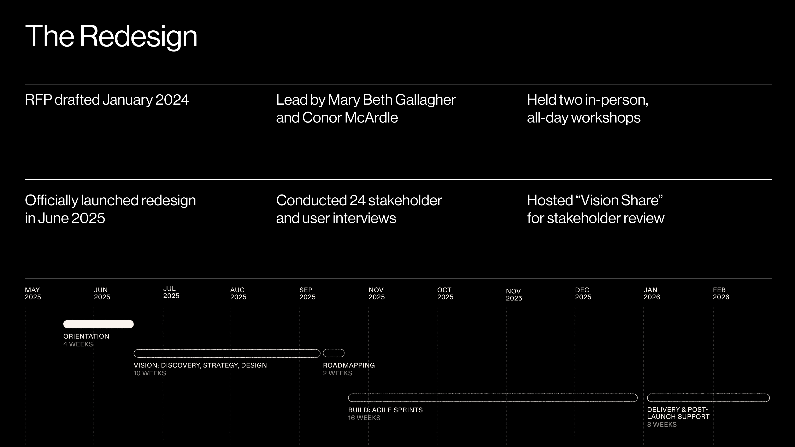
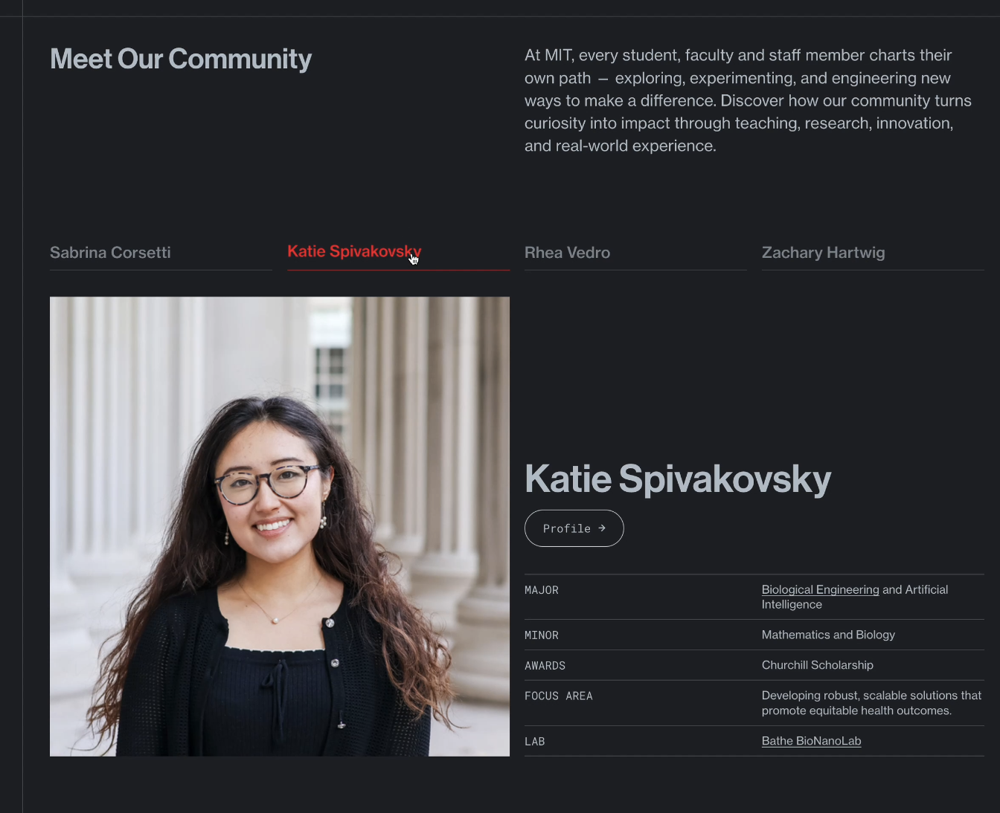
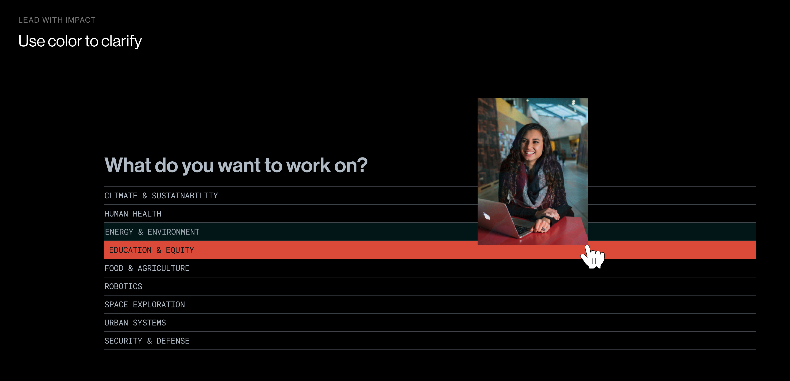
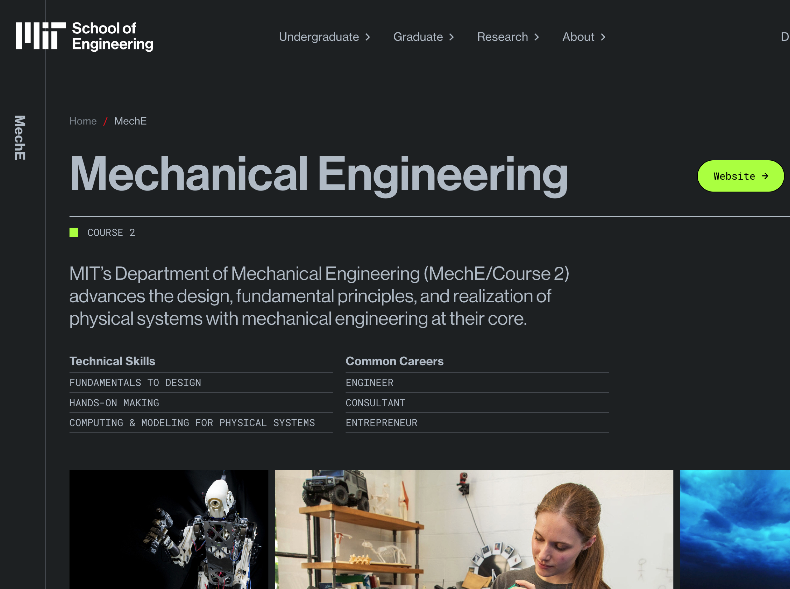
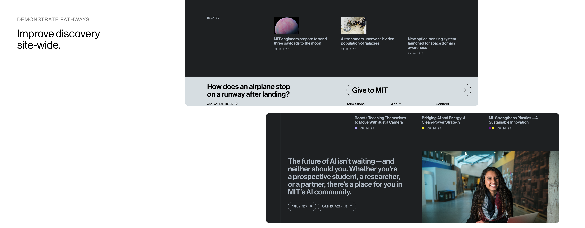

MIT School of Engineering — Website Redesign

// the challenge
The Challenge
The MIT School of Engineering's previous website, launched in 2016, no longer reflected the scale, complexity, or interdisciplinary nature of engineering at MIT. Academic programs, research initiatives, and student opportunities were distributed across disconnected sites, making it difficult for users — especially prospective and current students — to understand the full breadth of engineering pathways. At the same time, the School recognized an opportunity to more clearly articulate the public value of engineering and higher education.
// the process
The Process
The redesign was built on a deep foundation of research and listening:
- Years of student advisory feedback — Undergraduate and graduate advisory groups provided ongoing insight into how students search for information, evaluate programs, and experience institutional websites. Their calls for clarity, transparency, and usefulness shaped the project from the outset.
- 24 stakeholder interviews — and two in-person workshops with students, faculty, staff, and leadership.
- A collaborative Vision Share presentation — that aligned the community around shared goals before design began.
Working with the design firm Upstatement — the same studio behind the redesign of MIT.edu, MIT Admissions, and MIT Technology Review — we restructured the site to prioritize academic pathways and interdisciplinary connections over organizational hierarchy.

// the design
The Design
The homepage leads with impact. The School's rallying cry — "Solving the unsolvable" — anchors the page alongside the strategic research themes that define MIT engineering today: Climate & Energy, Health & Life Sciences, AI & Machine Learning, Design & Manufacturing, and Quantum. Bite-sized proof points and clear pathways guide users into courses, departments, and research areas.
The site was designed mobile-first. With 43% of traffic coming from phones and 56% from desktop, the homepage structure had to scan effortlessly on a small screen — tap-friendly navigation, clear hierarchy, and impact up front.

Key features:
- "Meet Our Community" — Quick profiles of real students and faculty that help prospective students imagine themselves at MIT.
- TikTok-style vertical videos — Current students answer questions in a format native to the audience.
- Faculty video profiles — Researchers explaining their work in their own words, making engineering approachable.
- "What do you want to work on?" — An interactive research explorer using color to guide users through topics, dynamically surfacing related people and programs.
- Department pages — Rich templates pairing descriptions with photo grids, technical skills, common careers, and direct links.
- Ask an Engineer — Elevated into a core public-facing science communication initiative, with 150+ questions woven throughout the site.
- Dark mode / Light mode — Supporting accessibility and user preference.
- Digital signage — The site's visual language extends into the physical School of Engineering building.
- Editorial discovery — Every page always gives users somewhere else to go, keeping discovery alive site-wide.







// the result
The Result
For the first time, all of MIT's engineering academic offerings — more than 20 undergraduate majors and a full range of graduate programs — are presented in a single, coherent experience. The site serves students, supports institutional strategy, advances public understanding of engineering, and is built to last. A governance framework with assigned content owners and regular review cycles ensures it stays accurate, current, and mission-aligned.